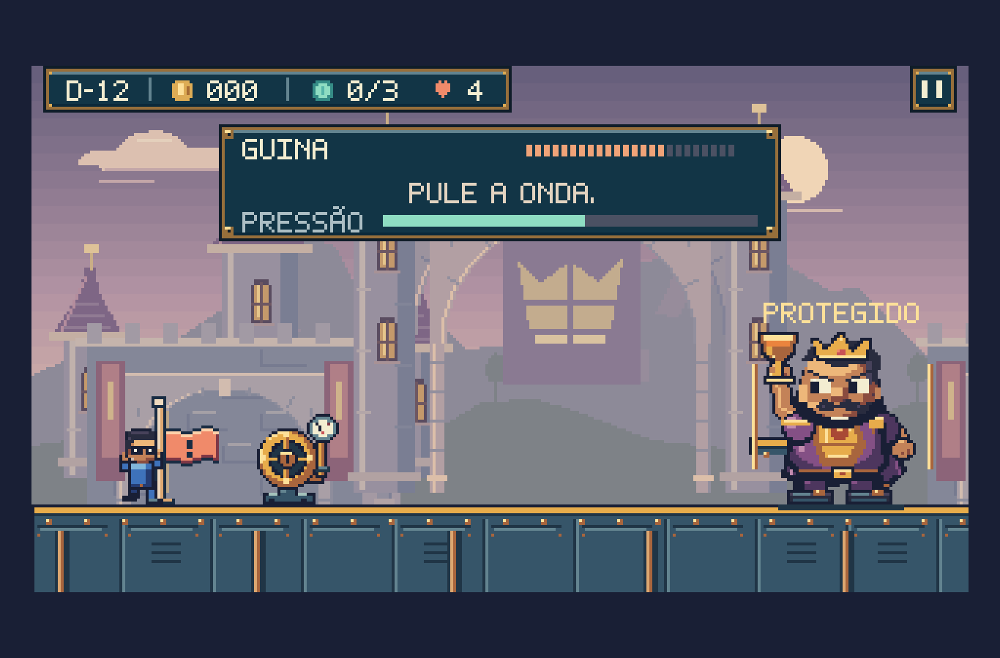
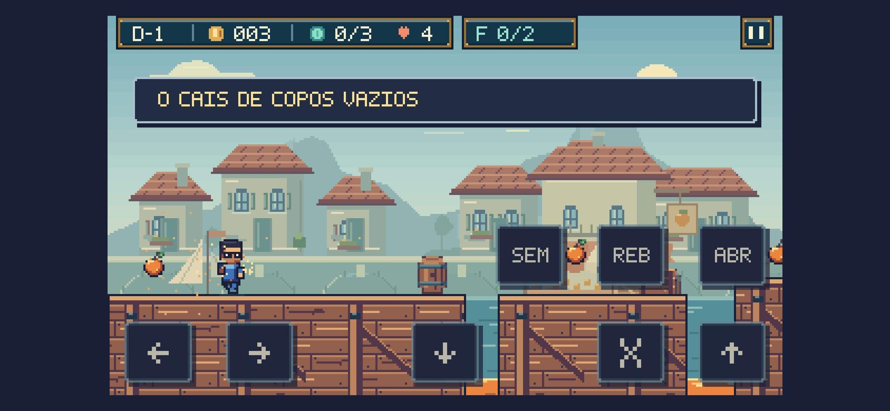

Nova revisão: cenários, materiais e animações — ver a revisão atual.
Super Feka Gaps World · Império da Delícia
Objetos e criaturas com mais personalidade.
Inimigos, chefes, coletáveis e máquinas refinados dentro do jogo. Casca, vidro, madeira e metal ganham detalhes próprios, com contornos e iluminação da paleta compartilhada do World.
8 inimigos2 chefes14 fases revisadas64 capturas de cenário e objetos
Movimento e expressão.
Prancha para inspecionar os desenhos. Durante a partida, cada comportamento determina a pose: flores e garrafas reagem ao disparo real, vespas acompanham a direção do voo e barris despertam com a aproximação de Feka. A preferência de movimento reduzido pausa esta prévia.
Quadros dos inimigos · Quadros dos chefes
Pequenos objetos, funções claras.
O selo tem fitas e relevo; a memória é uma gota facetada. O coração de cura e o projétil de Guina usam desenhos diferentes. Os projéteis rebatidos conservam seus contornos e recebem uma trilha própria.
Antes e depois dos personagens.
Máquinas e objetos nas fases.
A roda e o manômetro mostram a abertura por posição e cor; a bandeira e as frutas têm seu próprio espaço.
Capturas do renderizador real em estados preparados para revisão visual. A câmera e a posição de Feka podem variar para mostrar cada objeto. Essas imagens não são gravações de partidas completas.
Na mesma janela do World.

Guina no cenário, com a interface compartilhada.
Leitura da arte em tela menor.